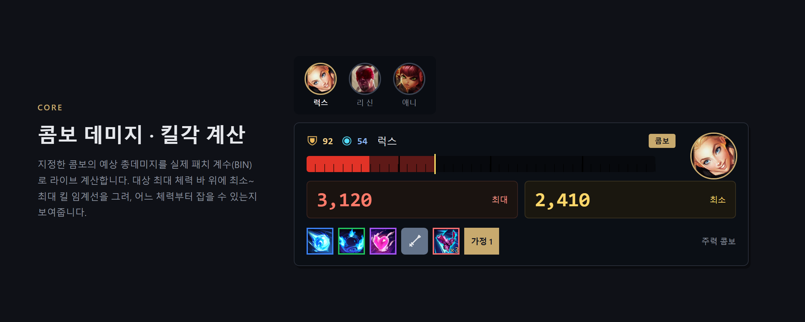
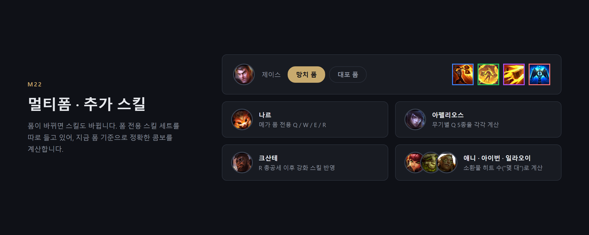
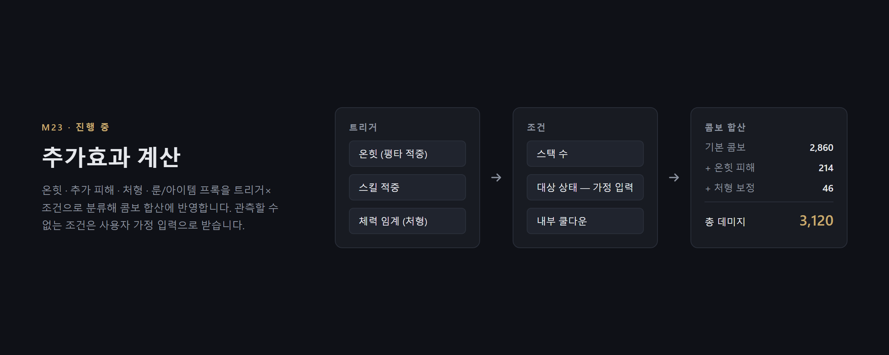
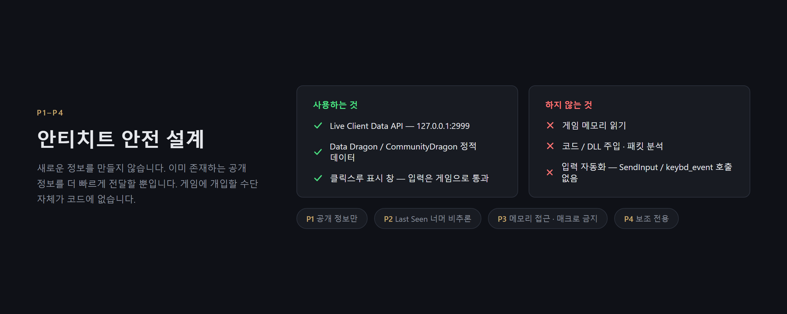

지금 이 콤보로 킬각이 나오는지, 게임 화면 위에서 바로.
내 실시간 스탯·룬·아이템 기준으로 콤보 데미지를 계산해 보여주는 가벼운 LoL 오버레이 — 무료
무설치 포터블 zip도 있습니다 · Windows 10/11 · 업데이트 자동
0.4.0 · 모든 챔피언 툴팁 항목 단위 검사 · 치명타 기댓값 선 · 탱커 아이템 추천 · 단축키 3키 조합 · 간단히 보기 게이지 · 변경 사항

모든 챔피언의 스킬 툴팁을 문장 단위로 쪼개, 데미지 항목마다 엔진 계산에 빠짐없이 연결됐는지 자동으로 검사합니다. 치명타는 운에 따라 갈리니 확정 킬(최소)과 최대 사이에 치명타 기댓값 선도 그립니다.


살아 있는 적마다 풀콤보 예상 데미지를 내 체력 바 위 눈금으로 그립니다. 내 체력이 눈금보다 낮으면 그 적의 풀콤보에 죽는다는 뜻. 적의 레벨·아이템은 스코어보드 정보만 쓰고, 스킬은 모두 준비된 것으로 가정합니다.
상점 키 P로 여닫는 추천 카드. 딜 기준은 지금 대상에게 내 콤보 데미지가 가장 많이 느는 완성 아이템을, 탱커 기준은 적 전원의 풀콤보를 가장 잘 버티는 체력·방어 아이템을 1000골드당 효율과 함께 보여줍니다.
죽은 적은 초상화에 부활까지 남은 시간과 라인으로 걸어오는 시간을 더해 ~M:SS로 보여줍니다. 억제기·넥서스 포탑 재생성은 Live Client API의 파괴 이벤트 시각으로 셉니다.
챔피언 선택 화면에서 라인 상대와 나의 레벨별 처치 임계를 한 장으로 보여줍니다. 상대 체력이 몇 % 아래면 내 풀콤보에 잡히는지, 내가 몇 % 아래면 상대 풀콤보에 잡히는지. "2레벨은 상대, 6레벨은 나" 같은 라인 계획을 게임 전에 세웁니다. 라인 상대는 추정이라 다른 적 초상화를 눌러 바꿀 수 있습니다.
| 레벨 | 내 풀콤보 → 상대 | 상대 풀콤보 → 나 |
|---|---|---|
| 2 | 31% | 38% |
| 3 | 42% | 44% |
| 6 | 71% | 63% |
| 9 | 78% | 70% |
게임마다 내 체력이 적 풀콤보선 아래였을 때의 데스와, 콤보를 확인한 뒤 따낸 킬을 정리해 보여줍니다. 기록은 내 PC에만 저장됩니다.
모든 챔피언에 추천 콤보가 기본으로 들어 있고, 직접 짠 콤보는 더 센 시전 순서가 있으면 이득과 함께 알려줍니다. 단축키는 Alt·Ctrl·Shift에 일반 키를 최대 3개까지 묶을 수 있고, 공유 코드로 디스코드에서 콤보를 주고받을 수 있습니다.
헬퍼류와 원리부터 다릅니다 — 소스 코드가 공개돼 있어 직접 확인할 수 있습니다.

Riot Developer Portal에 제품 등록·심사 절차를 진행 중입니다. 전체 소스: github.com/JiMin7788/lol_overlay_fova
Fova 설치 파일 — 항상 최신 버전, 이후 업데이트는 자동
포터블 zip — 풀어서 fova.exe 실행 (무설치, 자동 업데이트 동일)
.NET 8 Desktop Runtime이 필요합니다 — 설치 파일은 없으면 자동으로 설치합니다. 모든 버전은 GitHub Releases에 있습니다.
Fova는 게임 메모리를 읽거나 쓰지 않고, 코드 주입·패킷 분석·매크로·자동 입력도 하지 않습니다. Riot이 공식으로 제공하는 로컬 Live Client Data API와 공개 게임 데이터(Data Dragon)만 읽어 별도 창에 표시합니다. Riot 개발자 정책에 맞춰 설계했고 Riot Developer Portal 등록·문의를 진행 중이지만, 서드파티 앱 허용 여부의 최종 판단은 Riot에 있습니다. 소스 전체가 GitHub에 공개돼 있어 직접 확인할 수 있습니다.
Windows SmartScreen 경고입니다. 코드 서명 인증서가 없는 새 프로그램은 다운로드 이력이 쌓이기 전까지 이 화면이 뜹니다. "추가 정보 → 실행"으로 진행하세요. 파일이 걱정되면 받은 설치 파일을 VirusTotal에 직접 올려 여러 백신의 검사 결과를 확인할 수 있습니다.
오버레이는 마우스가 통과하는 표시 전용 창이고, 저사양 PC를 기준으로 가볍게 설계했습니다. 게임 중에는 광고도 완전히 꺼집니다.
기본 단축키는 Shift+Tab이며 설정 → 오버레이에서 바꿀 수 있습니다. 모든 단축키는 Alt·Ctrl·Shift에 일반 키를 최대 3개까지 묶을 수 있습니다(예: Alt+Q+W). 위치와 크기는 설정의 배율·이동 모드로 조절합니다.
자동입니다. 실행할 때 새 버전을 확인해 백그라운드로 받아 두고, 앱을 종료할 때 적용합니다. 설정은 그대로 유지됩니다.
디스코드의 #질문-도움, #버그-제보에 남겨 주세요. 콤보 공유와 패치노트도 거기서 봅니다. 앱 안의 도움말 → 버그 신고로 로그와 버전을 함께 보낼 수도 있습니다.
무료입니다.